Runenlesungen aus dem Brunnen des Schicksals.
Wirf das Elder Futhark, lies, was fällt, in der Stimme der alten Gedichte, und lass dich von den Nachtklängen in den Schlaf tragen.
Drei Frauen sitzen an einem Brunnen
In den alten nordischen Gedichten sitzen drei Nornen an einem Brunnen unter Yggdrasil, dem Weltenbaum. Sie begießen seine Wurzeln, ritzen Stäbe und bestimmen das Leben aller, die geboren werden. Die älteste ist Urd. Ihr Name bedeutet das, was geschehen ist, und der Brunnen trägt ihren Namen.
Urdloom ist nach ihr benannt und nach dem Webstuhl, auf dem, wie es hieß, das Schicksal gewebt wurde. Die App bewahrt diese Stimmung: ein Beutel voller Steine in deiner Hand, ein Tuch auf dem Boden und Lesungen in der Stimme der Sagas statt in der eines Horoskops.
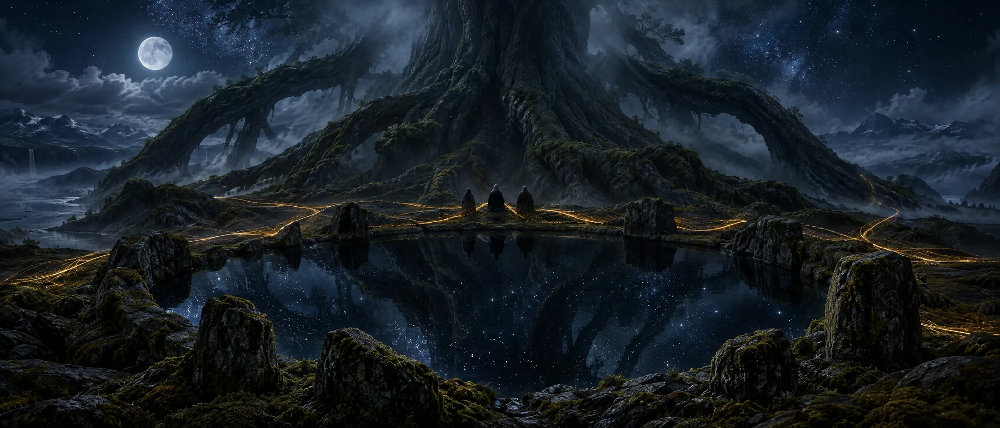
Von dort kommen Frauen, vielwissende, drei aus dem See unter dem Baum.Völuspá, Strophe 20
Halten, schütteln, loslassen
Halte den Beutel, und die Steine klappern in deiner Hand. Lass los, und sie fliegen auf das Tuch, rollen, kommen zur Ruhe und drehen sich einer nach dem anderen um. Darunter erscheint die Lesung.
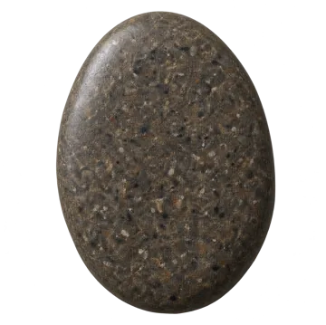
Einzelne Rune
Ein einzelner Stein für den Tag, der vor dir liegt, oder für eine Frage, die sich mit Ja oder Nein beantworten lässt. Ein Tippen, und er ist geworfen.
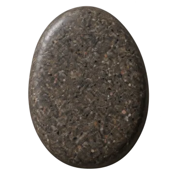
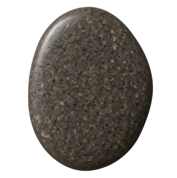
Wurf mit drei Runen
Lage, Handeln, Ausgang. Von links nach rechts gelesen wie eine kurze Saga, dann als Ganzes: Ein letzter Faden zeigt, wie die drei miteinander sprechen.
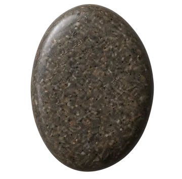
Kreuz mit fünf Runen
Vergangenheit, Gegenwart und Zukunft quer durch die Mitte, die Herausforderung darüber und der Ausgang darunter, und du stehst in seinem Herzen.
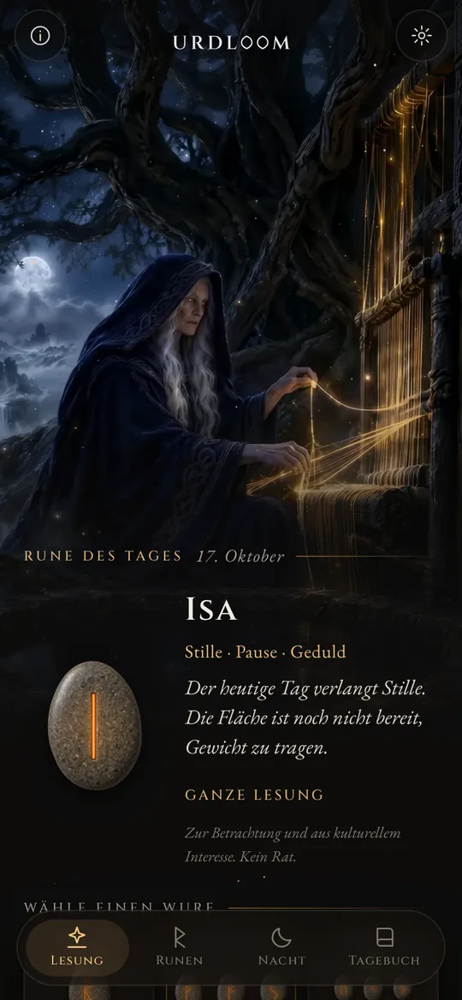
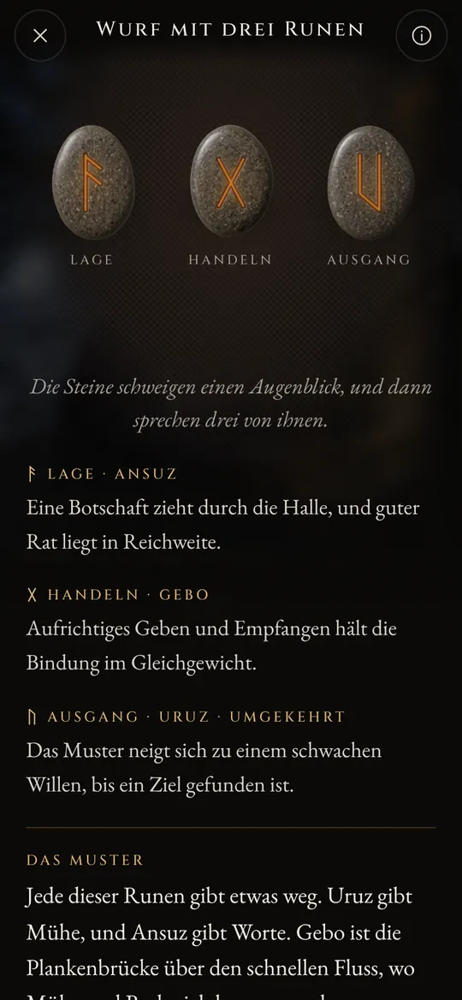
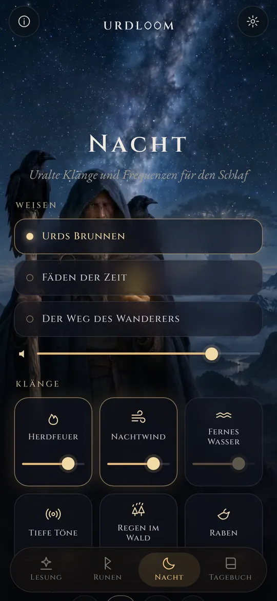
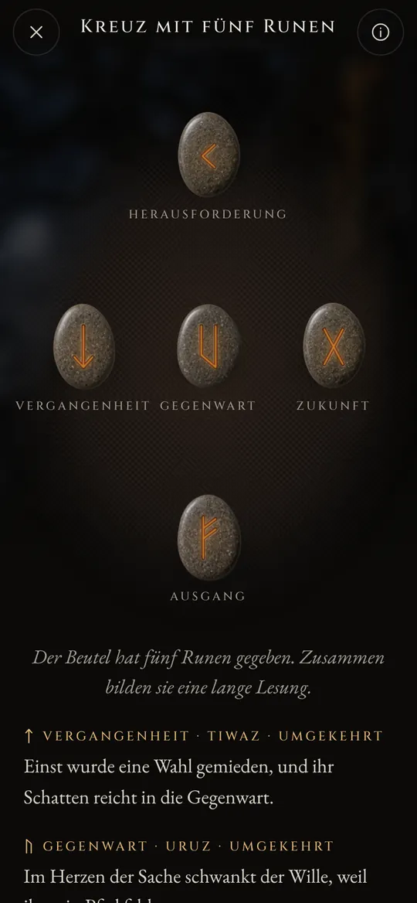
Jede Lesung wurde von Hand geschrieben: die vierundzwanzig Runen, jedes Paar und alle 2.024 Dreierkombinationen, in jeder der zweiundzwanzig Sprachen. Nichts wird erzeugt, während du wartest.
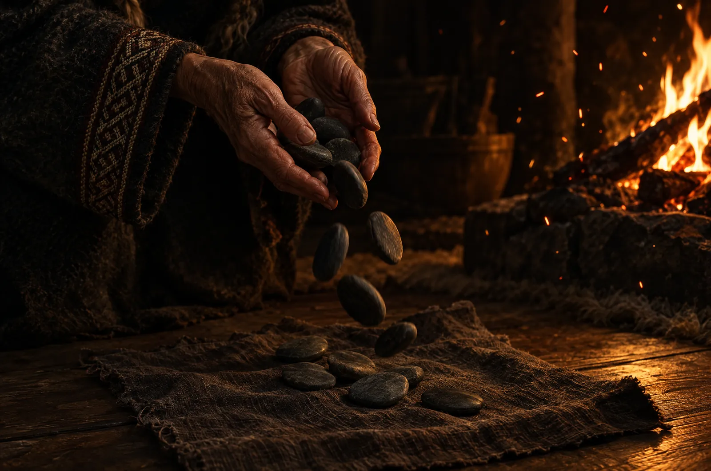
Die vierundzwanzig Runen
Das Elder Futhark ist das älteste Runenalphabet und wurde etwa vom zweiten bis zum achten Jahrhundert geritzt. Seine vierundzwanzig Zeichen teilen sich in drei Familien zu je acht, die Ætts genannt werden, jede benannt nach dem Gott, dessen Rune an ihrer Spitze steht. Berühre einen Stein, um ihn zu lesen.
Freyrs Ætt
Hagals Ætt
Tyrs Ætt
Die Runennamen bleiben in jeder Sprache in ihrer alten Form. Sie sind die Namen der Zeichen selbst, von Gelehrten aus den Runengedichten und den ältesten Alphabeten erschlossen.
Eine kurze Geschichte der Runen
Runen sind zuerst einmal Buchstaben. Germanische Völker ritzten sie rund fünfzehnhundert Jahre lang in Holz, Knochen, Metall und Stein. So sind die Zeichen und der alte Brauch des Loswerfens zu uns gelangt.
Lose auf einem weißen Tuch
Der römische Geschichtsschreiber Tacitus berichtet, dass die Germanen den Zweig eines Obstbaums in Stäbchen schneiden, sie mit Zeichen versehen und auf ein weißes Tuch streuen. Ein Priester oder der Hausvater hebt drei davon auf, eines nach dem anderen, und deutet sie. Dass die Zeichen Runen waren, sagt er nicht, doch die Geste ist dieselbe, die Urdloom bewahrt.
Die ersten Inschriften
Ein Knochenkamm aus dem Moor von Vimose in Dänemark trägt eine der ältesten bekannten Runeninschriften, ein einziges Wort: harja. Speerspitzen, Fibeln und Amulette aus denselben Jahrhunderten zeigen, dass die Schrift schon über den ganzen Norden verbreitet war.
Die ganze Reihe auf einem Stein
Auf dem Stein von Kylver auf Gotland ritzte jemand alle vierundzwanzig Zeichen in ihrer Reihenfolge ein, das älteste vollständige Futhark, das wir kennen. Die Reihe ist nach ihren ersten sechs Buchstaben benannt: f, u, th, a, r, k.
Die goldenen Hörner
Eines der beiden Goldhörner von Gallehus in Dänemark trägt eine stabreimende Verszeile: Ich, Hlewagastiz, Sohn des Holt, machte das Horn. Sie gehört zu den frühesten Versen in einer germanischen Sprache überhaupt.
Sechzehn Zeichen für die Wikingerzeit
In Skandinavien schrumpft das Alphabet auf sechzehn Zeichen, das Jüngere Futhark. In seinen Buchstaben werden Tausende Gedenksteine errichtet, darunter die großen Steine von Jelling in Dänemark.
Die Gedichte werden aufgeschrieben
Isländische Schreiber zeichnen die Lieder der Edda auf. In der Völuspá sitzen die Nornen an Urds Brunnen; im Hávamál hängt Odin neun Nächte am windigen Baum und nimmt mit einem Schrei die Runen auf.
Ein Vers für jede Rune
Runengedichte aus Norwegen und Island, dazu ein älteres angelsächsisches, geben jeder Rune einen kurzen Vers: Vieh sät Streit unter Verwandten, Hagel ist das kälteste Korn, Eis ist sehr glatt. Vieles, was wir über die Bedeutungen der Runen wissen, stammt aus diesen Versen.
Wieder lesen
Die Runen zum Nachdenken zu nutzen, ist eine moderne Wiederbelebung, die auf diesen Gedichten und den Bildern der Edda aufbaut. Urdloom steht offen in dieser Tradition: Es gibt sich nicht als uraltes Orakel aus, es liest nur die alten Zeichen mit Sorgfalt.
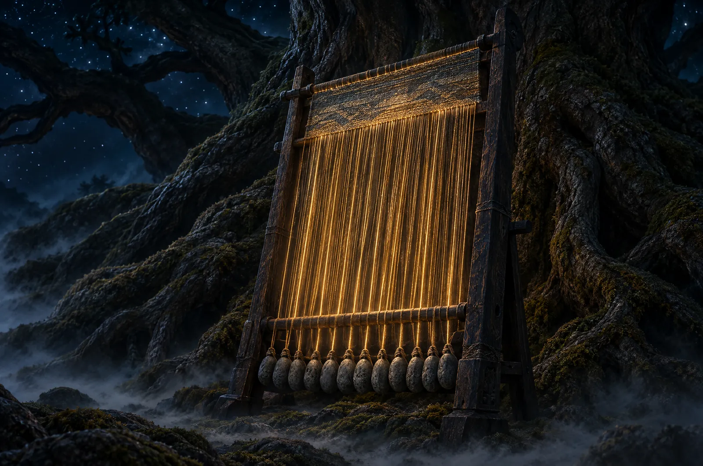
Uralte Klänge und Frequenzen für den Schlaf
Wenn der Tag vorüber ist, tritt der Wanderer hinaus unter die Sterne. Wähle eine Weise, lege Klänge darüber und stelle einen Timer. Die Klänge spielen bei ausgeschaltetem Bildschirm weiter und verklingen von selbst.
Drei Weisen: Urds Brunnen, Fäden der Zeit und Der Weg des Wanderers, getragen von Kehlgesang, Rahmentrommel und gestrichener Tagelharpa.
Sechs Schichten zum Mischen, jede mit eigener Lautstärke: Herdfeuer, Nachtwind, fernes Wasser, tiefe Töne, Regen im Wald und Raben.
Jeder Klang wurde eigens für Urdloom geschaffen. Nichts wird aus dem Internet abgespielt.
Kleine Dinge, die zählen
- Jeden Morgen eine Rune
- Auf dem ersten Bildschirm wartet ein verdeckter Stein. Wenn du möchtest, verrät dir jeden Morgen eine kurze Nachricht, welche Rune für dich gezogen wurde.
- Ein Tagebuch
- Bewahre die Lesungen auf, die dich ansprechen, zusammen mit der Frage, die du gestellt hast.
- Lesungen zum Teilen
- Schicke eine Lesung als Bild: die Steine, wie sie gefallen sind, und die Worte darunter.
- Zweiundzwanzig Sprachen
- Jede geschrieben und geprüft von Menschen, die sie lesen, mit Schrift und Größe, die du anpassen kannst.
Was hier geschieht, bleibt hier
Urdloom funktioniert ohne Internet. Es gibt kein Konto, keine Registrierung und keine Werbung, und die App enthält keinerlei Analyse oder Nachverfolgung. Deine Fragen, Lesungen und dein Tagebuch bleiben auf deinem Telefon.
DatenschutzFragen
Sagt Urdloom die Zukunft voraus?
Nein. Die Lesungen laden zum Nachdenken ein und dienen dem kulturellen Interesse. Sie deuten an, wie es die alten Runen taten, und ihre Bedeutung nimmt in deinem eigenen Leben Gestalt an. Nichts in der App ist medizinische, finanzielle, rechtliche oder sonstige fachliche Beratung.
Warum klingt die Sprache so alt?
Die Runen stammen aus einer Welt der Gedichte, Sagas und Rätsel. Wir haben die Lesungen bewusst in dieser Stimme geschrieben und sie in jeder Sprache so nah wie möglich an der Überlieferung der Runen gehalten.
Brauche ich eine Internetverbindung?
Nein. Alles, von den Lesungen bis zu den Nachtklängen, steckt in der App.
Welche Sprachen gibt es?
Englisch, Türkisch, Deutsch, Französisch, Spanisch, Italienisch, Portugiesisch, Russisch, Ukrainisch, Polnisch, Niederländisch, Schwedisch, Norwegisch, Finnisch, Griechisch, Arabisch, Hindi, Indonesisch, Japanisch, Koreanisch, Chinesisch und Albanisch.
Schreib uns
Fragen, ein Wort, das in deiner Sprache schief klingt, oder eine Lesung, die dich nicht loslässt: Wir lesen jede Nachricht.
support@urdloom.app